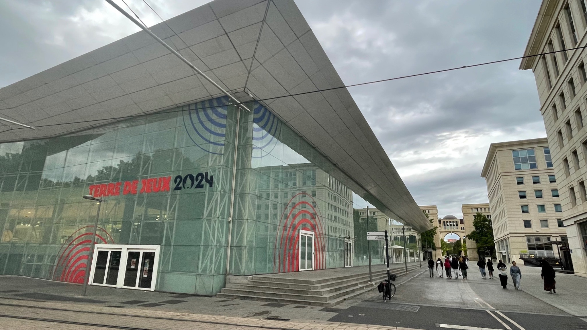
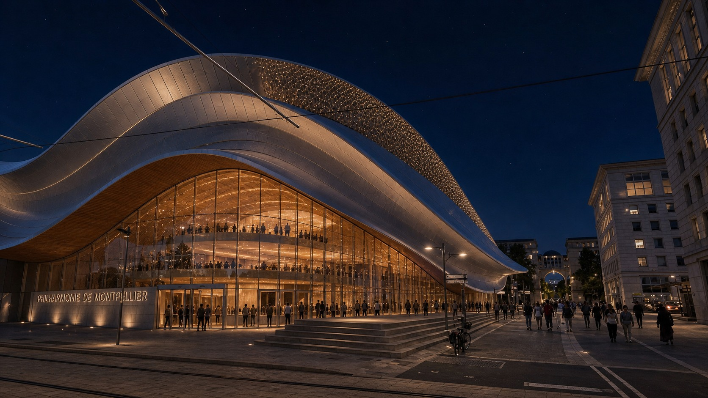
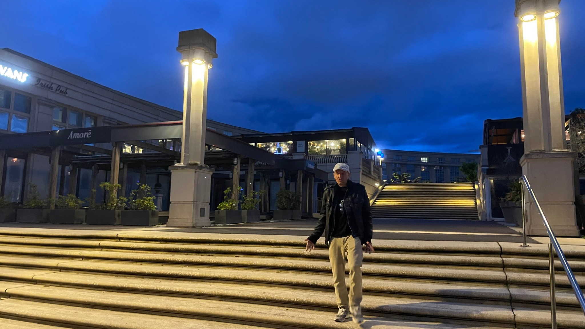
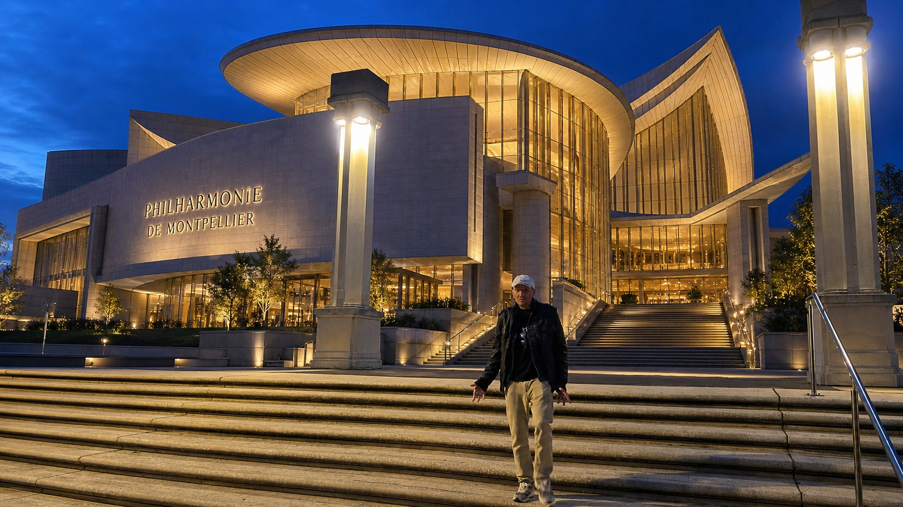
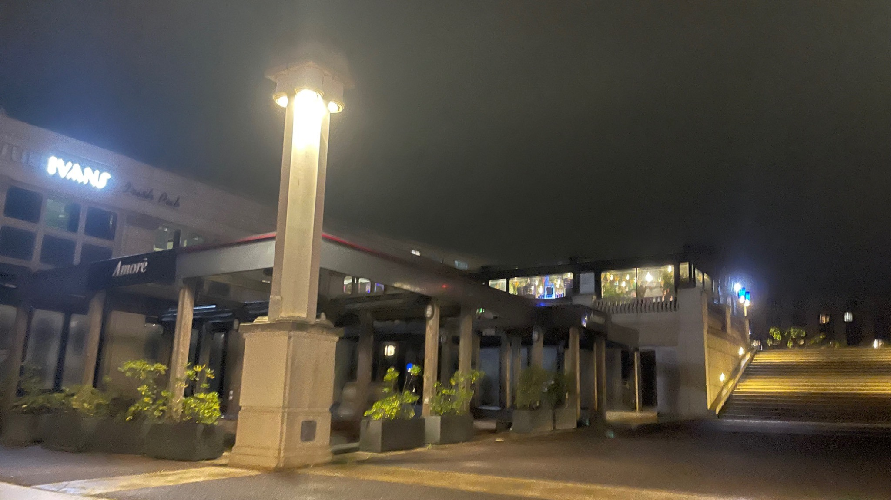
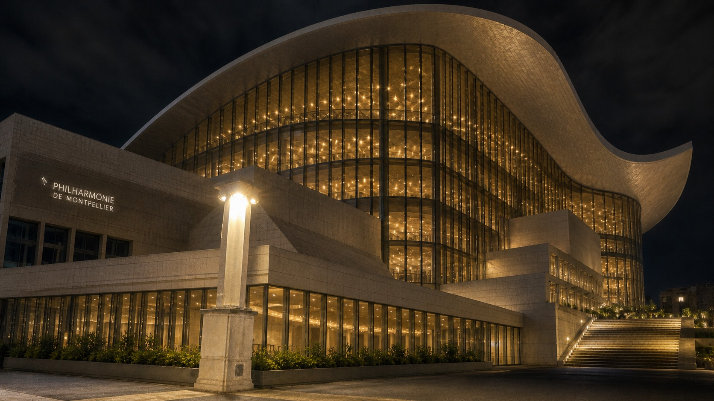

Challenge
Could a fictional architectural landmark be tested inside a real city context?

Could a fictional architectural landmark be tested inside a real city context?
Existing location references were used to explore scale, night presence, integration and production feasibility.
Clearer VFX scope. Faster location decisions. Better alignment before production.






The visual study helps production compare location reality, VFX ambition and architectural integration before committing resources.